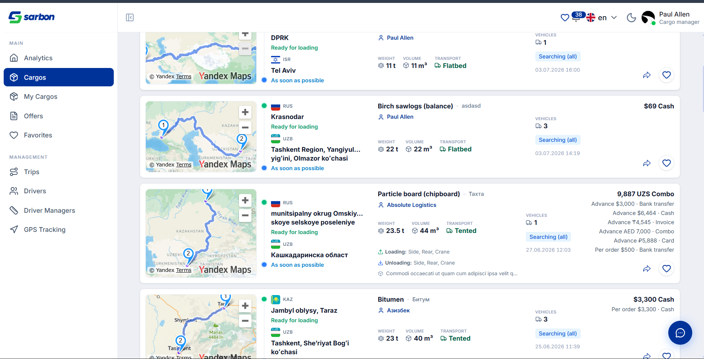

03.07.2026 — насыщенный день по Sarbon Frontend. Видеозвонок: модалка звонка GlobalAudioCallModal расширена до полноценного P2P-видео — камера вкл/выкл, демонстрация экрана, локальное превью и удалённое видео, сворачивание/разворачивание панели, входящий вызов «ответить с видео / только аудио», а также подстройка под слабую сеть (кодек-предпочтение, ограничение битрейта/FPS) в новом webrtcTuning.ts. Видео-заметки: запись «кружочков» прямо из композера чата (запрос доступа к камере, выбор/переключение камеры, лимиты длительности, оптимистичный «uploading»-пузырёк, воспроизведение с кольцом-прогрессом). Груз: поиск адреса точки маршрута через геокодер Yandex с автодополнением от 3-го символа. Админ: переработан командный центр (плитки по ролям, пофильтровые диапазоны дат, счётчики модерации по ролям), модерация водителей переведена с KYC на «допуск» (паритет с менеджерами). Дефекты: вкладка «Все» в «Моих грузах» теперь показывает все статусы; редактирование груза переведено на PATCH (деактивированные грузы снова сохраняются); гейт модерации диспетчера на входе.
| Область | Что было / причина | Что сделано | Файлы |
|---|---|---|---|
| Видеозвонок (WebRTC) + демонстрация экрана feature закоммичено |
Был только аудиозвонок. Не было видео, камеры, шаринга экрана и подстройки под слабую сеть. | Модалка звонка расширена до видео: камера вкл/выкл, демонстрация экрана (getDisplayMedia), локальное превью + удалённое видео, сворачивание/разворачивание панели, входящий «ответить с видео / только аудио». Тип звонка audio|video|screen — UI-подсказка (медиа задаёт SDP). Тюнинг слабой сети: кодек-предпочтение, ограничение битрейта/FPS, degradation preference. | GlobalAudioCallModal.tsx, webrtcTuning.ts (+тест), callTypes.ts, useCallStore.ts, ChatPage.tsx, ChatThreadPanel.tsx, useDispatcherSseSubscriptions.ts, locales ×15 |
| Видео-заметки в чате («кружочки») feature закоммичено |
В чате нельзя было записать короткое видеосообщение прямо из композера. | Запись видео-заметки: запрос доступа к камере/мик., выбор и переключение камеры, лимиты мин./макс. длительности, выбор MIME/битрейта, оптимистичный «uploading»-пузырёк, воспроизведение с кольцом-прогрессом. Обработаны все состояния отказа (нет камеры, запрет доступа, небезопасный контекст, не поддерживается). | useVideoNoteRecorder.ts, chatVideoNoteRecorder.ts (+тест), ChatVideoNoteRecorder.tsx, ChatVideoNoteMessage.tsx, ChatVideoNoteRing.tsx, ChatComposerPanel.tsx, MessageBubble.tsx, ConversationItem.tsx |
| Груз — поиск адреса маршрута feature закоммичено |
Точку маршрута можно было выбрать в основном на карте; текстового автодополнения адреса не было. | Поле поиска адреса с автодополнением через геокодер Yandex: запрос с 3-го символа, дебаунс 400 мс, до 7 результатов; выбранная точка резолвится в мультиязычные поля адреса (uz/ru/en/zh) + город/таймзона. | RoutePointAddressSearch.tsx, resolveYandexRoutePoint.ts (+тест), Step2Route.tsx |
| Админ — командный центр (переработка) feature закоммичено |
Единый глобальный диапазон дат; счётчики модерации только по грузам/водителям; графики в основном потоке. | Плитки-сводка по ролям; пофильтровые диапазоны дат в таблицах (новый DateRangeFilterDropdown + фильтр колонки по датам); графики композиции/рейсов вынесены в модалку; добавлены счётчики «в модерации» по ролям (менеджеры грузов / водителей) из analytics/moderation. | AdminCommandCenterPage.tsx, DateRangeFilterDropdown.tsx, tableFilters.tsx (+тест), AdminKpiTile.tsx, commandCenterChartData.ts |
| Админ — модерация водителей (KYC → допуск) change закоммичено |
Вкладка «Водители» модерировала KYC (личность), а требовалось модерировать допуск (moderation_status), как у менеджеров. | Панель переписана по образцу менеджеров: очередь /admin/drivers/moderation (moderation_status: pending), Accept → …/moderation/approve, Reject → …/moderation/reject { reason }; колонка теперь «moderation_status», KYC-колонка убрана. | DriverModerationPanel.tsx, AdminModerationPage.tsx, locales ×15 |
| Гейт модерации диспетчера + модерация менеджеров feature закоммичено |
Не было ограничения доступа для «pending»-диспетчеров; вкладка «Менеджеры» модерации требовала перевода на выделенные эндпоинты. | Диспетчер со статусом pending/rejected видит экран ограниченного доступа вместо приложения (предикат «fail-open», kill-switch в env). Модерация менеджеров переведена на выделенные эндпоинты DISPATCHER_MODERATION_{approve,reject}. | ModerationGate.tsx, Account{UnderReview,Rejected}Screen.tsx, moderationGate.ts (+тест), guestPaths.ts, ProtectedRoute.tsx, ManagerModerationPanel.tsx, endpoints.ts |
| Груз — вкладка «Все» показывала не все статусы bug закоммичено |
Вкладка «Все» отдавала только грузы в статусе «Searching (all)» — модерация/в работе/завершённые/архив пропадали, т.к. параметр status опускался, а бэкенд по умолчанию сужает до «поиска». | Вкладка «Все» теперь шлёт объединение статусов всех остальных вкладок (выводится программно, чтобы не «разъезжалось»); Excel-экспорт со вкладки «Все» тоже стал полным. | myCargosConstants.ts (+тест myCargosTabStatus) |
| Груз — редактирование (PUT→PATCH) bug закоммичено |
Сохранение правок деактивированного груза падало с 400; бэкенд перевёл обновление груза с PUT на PATCH. | Мутация обновления груза переведена usePut → usePatch (drop-in замена). Деактивированные грузы снова сохраняются. Задокументировано в docs/backend/cargo-update-deactivated-400.md. | MyCargoEditForm.tsx, docs/backend/cargo-update-deactivated-400.md |
| Аудиозвонок — устойчивость к обрыву bug закоммичено |
Перенос из работы 02.07: при локальном сбое звонка модалка закрывалась, тогда как серверный звонок оставался ACTIVE. | preserveSession сохраняет сессию на ошибках, модалка остаётся с рабочей кнопкой «Завершить»; в закрывающем review устранены 2 регрессии. Закоммичено в составе ba518948. | GlobalAudioCallModal.tsx, ChatThreadPanel.tsx |
// src/components/shared/GlobalAudioCallModal.tsx + // Видео-трансивер всегда sendrecv — даже в аудио-звонке, поэтому ontrack по видео + // срабатывает на каждом звонке и видео можно включить без пересоздания сессии. + const isVideoCall = callType === 'video' || callType === 'screen' + const [hasRemoteVideo, setHasRemoteVideo] = useState(false) // по unmute трека, не по наличию + const canShareScreen = typeof navigator.mediaDevices?.getDisplayMedia === 'function' // src/utils/webrtcTuning.ts — подстройка под слабую сеть (всё feature-detected / try-catch) + export const CAMERA_CONSTRAINTS = { width:{ideal:640}, height:{ideal:360}, frameRate:{ideal:20,max:24} } + preferVideoCodec(...) · tuneVideoSender(maxBitrate, maxFramerate, degradationPreference)
Изменения дня собраны в 4 коммита ветки staging. Технические записи по дефектам — в bug.md (корень репозитория, записи 03.07).
Ниже — реальный скриншот из живого приложения на staging (диспетчерская авторизация, тест-аккаунт «Paul Allen · Cargo manager»), демонстрирующий результат нового поиска адреса маршрута в карточках грузов. Остальные функции дня (видеозвонок, видео-заметки) гейтятся камерой/микрофоном и P2P-сессией между двумя абонентами — их живая съёмка отложена до QA-клика на реальном устройстве; для админ-страниц в папке есть готовые capture-*.mjs (Playwright), запускаемые на локальном dev-сервере против staging.

| Артефакт | Путь |
|---|---|
| Журнал исправлений (записи 03.07) | bug.md (10:45 · 14:00 · 14:30 · 15:05) |
| Краткая сводка для PM (Excel) | daily-report/03.07.26/report-03.07.26.xlsx |
| Видеозвонок: модалка + тюнинг сети | src/components/shared/GlobalAudioCallModal.tsx · src/utils/webrtcTuning.ts |
| Видео-заметки: запись/сообщение/кольцо | src/hooks/useVideoNoteRecorder.ts · src/pages/chat/components/ChatVideoNote{Recorder,Message,Ring}.tsx · src/pages/chat/utils/chatVideoNoteRecorder.ts |
| Груз: поиск адреса маршрута | src/pages/cargos/cargo-create/components/RoutePointAddressSearch.tsx · src/utils/resolveYandexRoutePoint.ts |
| Админ: командный центр + фильтр дат | src/pages/admin/command-center/AdminCommandCenterPage.tsx · src/components/shared/admin/DateRangeFilterDropdown.tsx |
| Админ: модерация водителей (допуск) | src/pages/admin/moderation/components/DriverModerationPanel.tsx |
| Гейт модерации диспетчера | src/components/shared/moderation/*.tsx · src/utils/moderationGate.ts · src/router/guestPaths.ts |
| Груз: вкладка «Все» / редактирование | src/pages/cargos/my-cargos/utils/myCargosConstants.ts · my-cargo-detail/components/MyCargoEditForm.tsx |
| Скриншот (staging) + capture-скрипты | daily-report/03.07.26/img/ · daily-report/03.07.26/capture-*.mjs |
| Отчёт предыдущего дня | daily-report/02.07.26/index.html |